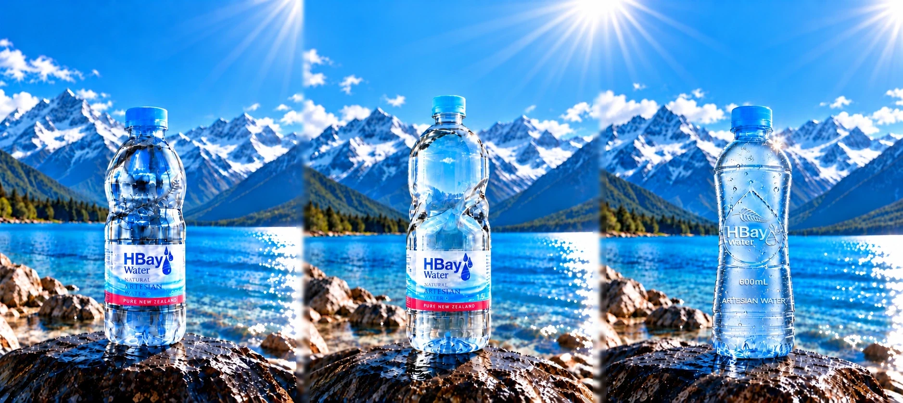
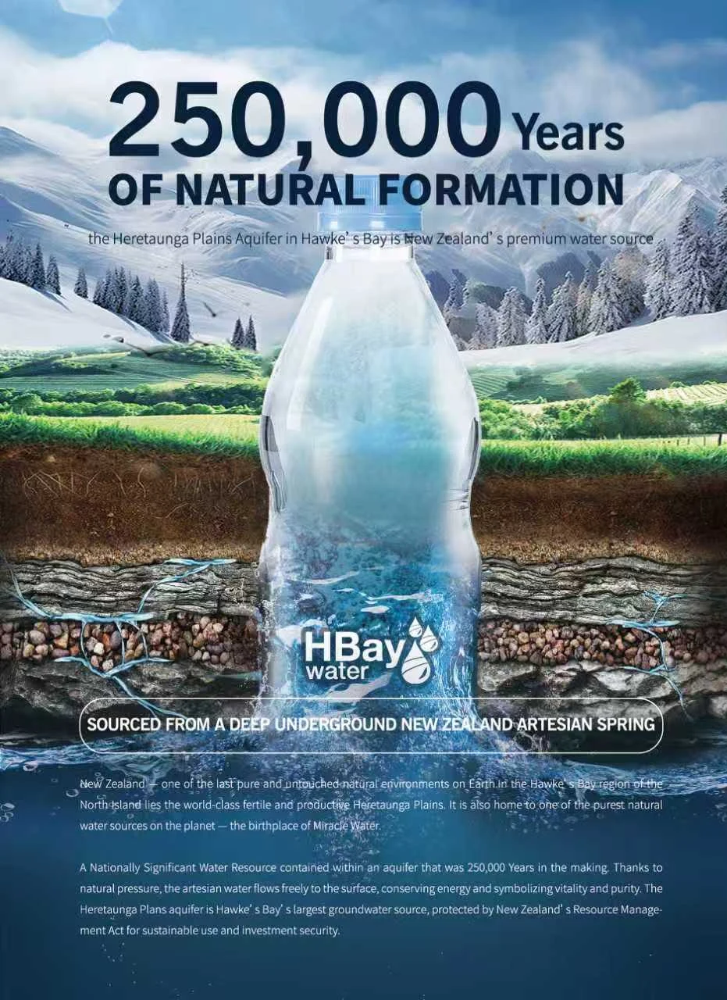

Artisan Water from New Zealand's Hawke's Bay
Client-supplied campaign artwork
Tasting notes.
Hawke’s Bay sets a good table: orchards, vineyards and long lunches on the east coast of the North Island. HBay is the water from beneath it, bottled in Hastings and carried to tables across New Zealand.
- Origin
- Hastings, Hawke’s Bay, New Zealand
- Source
- Natural artesian water, held in layers of gravel and sediment beneath the Heretaunga Plains
- pH
- 7.3
- Total dissolved solids
- 113 mg/L
- Calcium
- 18.7 mg/L
Sample values from the supplied internal summary, citing Hill Labs report 4306093.2 (sample HBL500X24PW). Results describe one sample, not a fixed specification. View the summary
The range.
Rising from beneath the Heretaunga Plains.
Rivers and changing coastlines laid down layers of gravel and fine sediment across Hawke’s Bay. Where groundwater is confined beneath less permeable layers, natural pressure can make it rise. That is the artesian condition.
The plains formed over some 250,000 years. That figure describes the landscape, not the age of the water. Source: Heretaunga Plains Groundwater Study, 1997.
Read about our water
Find HBay in store.
On the shelf at familiar New Zealand supermarkets. Range varies by store.
Wherever the table is.
See the productsCampaign images are AI-generated concepts. Final photography to follow.